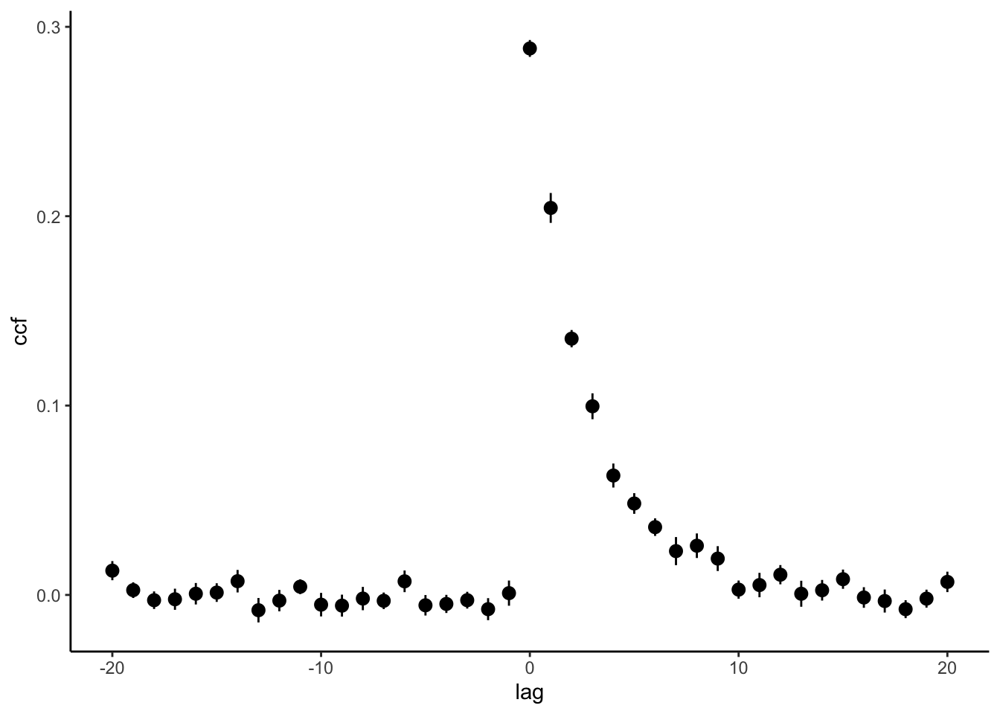

We now have these functions available from R: simulSequence, cpsy_get_nll_ and K_logLik. cpsy_get_nll_ is a special case of K_logLik, so we will use K_logLik instead.
We will use simulSequence to simulate tracking trajectories.
First step: define the model dynamics of the random walk
A random walk (RW) model denotes the scenario in which a person tracks a target that is changing its position randomly at every time step. A RW is defined as: \[x_{t+1}=x_t+ w_t,\ \ p(v_t) \sim \mathcal N(0,Q)\]\(v_t\) is the random component and it, usually, follow a Gaussian distribution with 0 mean and variance \(Q\).
In R this can be implemented as:
x0 <-0# initial position sig <-1#SD of the RW N <-500# time steps x <- x0 +cumsum(sig*rnorm(N))ggplot(data.frame(t=1:N,x=x)) +geom_line(aes(t,x))
Any model in continuous psychophysics consists of two parts:
The process dynamics which describes the stimulus movement
The observation model or equation.
As shown above, the process model for the random walk is:
\[\mathbf{x}_{t+1} = A\mathbf{x}_t + v_t,\ \ p(v_t) \sim \mathcal N(0,Q)\]\(A\) is the transition matrix, which for the RW is just a single element matrix \(A=[1]\) and \(w\) is the random noise defined above.
Process noise
As an experimenter you should control the process noise of the stimuli shown to the observers
\(C\) is the observation matrix. In this case is the same as \(A\).\(w\) is the observation noise and this is exactly the parameter we want to estimate with continuous psychophysics.
dt <-1/90# sampling rateA <-matrix(c(1),1,1) # Just one componentC <-matrix(c(1),1,1) # 0 can be dt is position is using velocity#kf = kfOscillation(q_pos=0.01,q_vel=0.001,sigma_p=0.05,sigma_v=0.022,dt=1/90,freq=0.1)V =matrix(1,1,1) # process noiseW =matrix(3,1,1) # observation noise
We have now define our model for a simple random walk. Now we can simulate our own random walk with the function simulateSequence. This function will return a two columns matrix: the first column is the state (i.e. actual position), and the second column is the simulated response or posterior. The parameters of simulSequence are the transition matrix \(A\), observation matrix \(C\), process and observation noise \(W\) and \(V\), and finally the initial state (x0), an initial estimate the the state (xhat0) and the number of time steps (T). In our case, the state is just the position that is changing randomly.
We simulate one dimensional movement, but if you have two dimensions, you just do the same for each dimension, since both are totally independent.
Let’s simulate one RW trajectory and plot it.
N <-1500s1 <-simulSequence(A,C,V,W,x0 =c(0.0),xhat0 =c(0),T=N)dd <-data.frame(time=1:N,x=s1[,1],xhat=s1[,2])ggplot(dd) +geom_line(aes(time,xhat,col="Estimate")) +# the process or stategeom_line(aes(time,x,col="Actual")) +scale_color_manual("State",values=c("black","red")) +ylab("Position")
As experimenters we know the process noise \(w\), but we do not know, the observation noise \(v\). Let’s estimate the position observation noise using continuous psychophysics.
To do so, we need to arrange the matrix returned by simulSequence, into a 3D-array. To so we proceed as follows:
First dimension is the number of samples
Second dimension is the number of (simulated) trials
Third dimension is the number of states interleaved with their estimates. For the random walk would be 2: the actual position and the estimate. If we had two states and their estimates, the number for the third dimension would be 4: state1, estimate1, state2, estimate2.
To estimate the observation noise, we will use the optimize method implemented in R because we are now fitting one parameter only. We need an optimization function that maximizes the log-likelihood of the Kalman filter. The optimization function is in file functions.R in the R directory of the project. We have named our function: RW.op and this function in turn calls the c++ function K_logLik which returns the log-likelihood and the Kalman gain.
dim(s1) <-c(N,1,2) # N sample, 1 trial, 2=1 state + 1 estimateoptimise(RW.op,c(0,10),x=s1)
$minimum
[1] 2.930738
$objective
[1] 3985.96
We can always check the value of the Kalman gain and loglik:
K_logLik(s1,A,C,V,W)
$K
[,1]
[1,] 0.2823757
$loglik
[1] -3986.088
Exercise
Simulate different random walks with simulSequence with different process to observation noise ratios and check the Kalman gain for the different ratios.
xxv <-apply(xx,c(2,3), dxdt) # we compute the speed for each trial (dim=2) and state/response(dim=3)xccf <-compute_ccf(xxv,maxlag =20)ggplot(xccf,aes(lag,ccf)) +stat_summary() +theme_classic()
No summary function supplied, defaulting to `mean_se()`

An alternative using python (ONLY if you strongly feel using Python)
Alternatively, you can use the python code available at RothkopfLab and focus the ideal observer model, which is the one we will use in this tutorial. You can use the tutorial jupyter notebook in the notebooks folder.
The next python chunk just simulates several random walks given a process noise and observation noise
The IdealObserver is the Kalman filter model.
from jax import grad, vmap, jit, random, numpy as jnpfrom lqg.tracking import IdealObserverfrom scipy import optimizeV =1# process noiseW =2# observation noisemodel = IdealObserver(process_noise=V,sigma=W) # sigma=observation noise T =500x = model.simulate(random.PRNGKey(0), n=100, T=T)model.log_likelihood(x).sum() # return the log_lik# so we would need to maximize the log lik to find the parameter.
DeviceArray(-129399.54, dtype=float32)
def kf_nll(p): m1 = IdealObserver(process_noise=1,sigma=p) res =-m1.log_likelihood(x).sum()return res.astype(float)res = optimize.minimize(kf_nll, jnp.array([0.1]),method='Nelder-Mead') # res["x"] # should be close to 2 (sigma value above)